About Me
I am a conservation-oriented landscape ecologist and geospatial analyst. I use GIS to answer ecological questions and support sustainable landscapes.
- ArcGIS Pro
- ArcGIS Desktop
- R
- Python
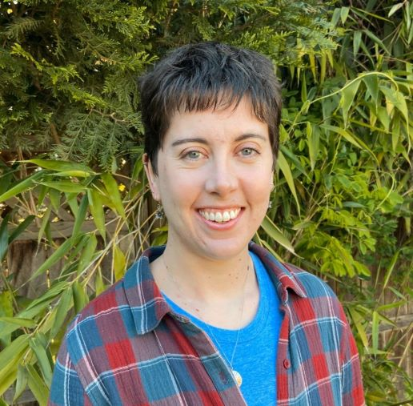
I am a conservation-oriented landscape ecologist and geospatial analyst. I use GIS to answer ecological questions and support sustainable landscapes.
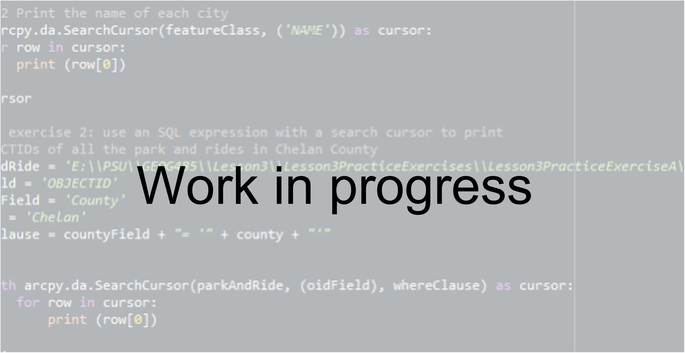
I coordinated the development of a web tool for the University of Maine Extension that educates lowbush blueberry growers about the landscape for wild bees. Maps included in BeeMapper are a land cover type map with eight classes relevant to wild bees and a predicted wild bee abundance map generated with the land cover map and information on bee habitat and life-history traits. One of my roles in this project included generating all the spatial data, which included deploying a Python script to 1) buffer 250 yd and and 1000 yd around all blueberry fields, 2) extract land cover and predicted abundance information, and 3) calculate the percent of each land cover or value in each buffer. The web development component was contracted out to a fellow graduate student and was done using open source tools. I used QGIS to create symbologies for both the land cover and abundance maps.
Another of my roles in this project was testing the tool with lowbush blueberry growers throughout the development process and incorporating their feedback. This was one of the most rewarding pieces of my dissertation work, and I am very grateful for all the valuable insight I recieved to make BeeMapper into the tool it is. I created the website for BeeMapper and wrote all accompanying documentation.
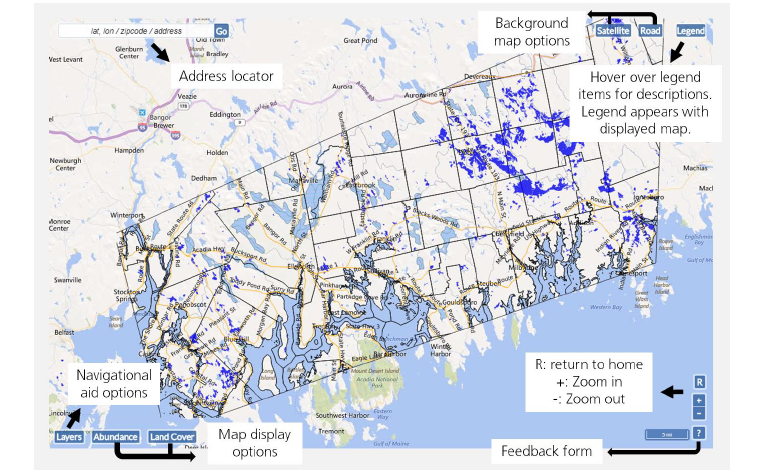
BeeMapper launch screen as displayed in the Users Guide.
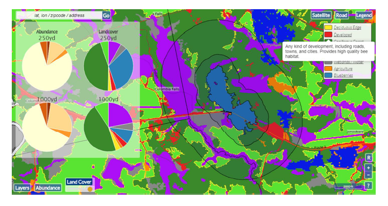
BeeMapper output displayed with the underlying land cover map.
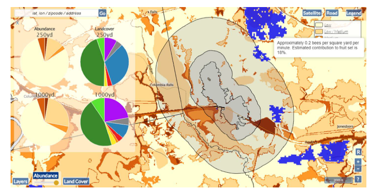
BeeMapper output displayed with the underlying predicted wild bee abundance map.
Along with conducting a literature review on pollinator habitat in roadside rights-of-way, I conducted a landscape pattern analysis surrounding ten paired sites along major highways in Maine. These sites were surveyed for plants, butterflies, and bumble bees along a linear transect in 2018.
I created point files from text files of coordinates, then connected them manually to create transect lines. I buffered 1000 m out around these lines to approximate the landscape size of bumble bees and butterflies. I calculated the percent of each land cover type (PLAND) using Fragstats then ran linear models connecting PLAND to pollinator abundance and species richness. Butterflies were more sensitive to cover type around roadside ROW sites than bumble bees.
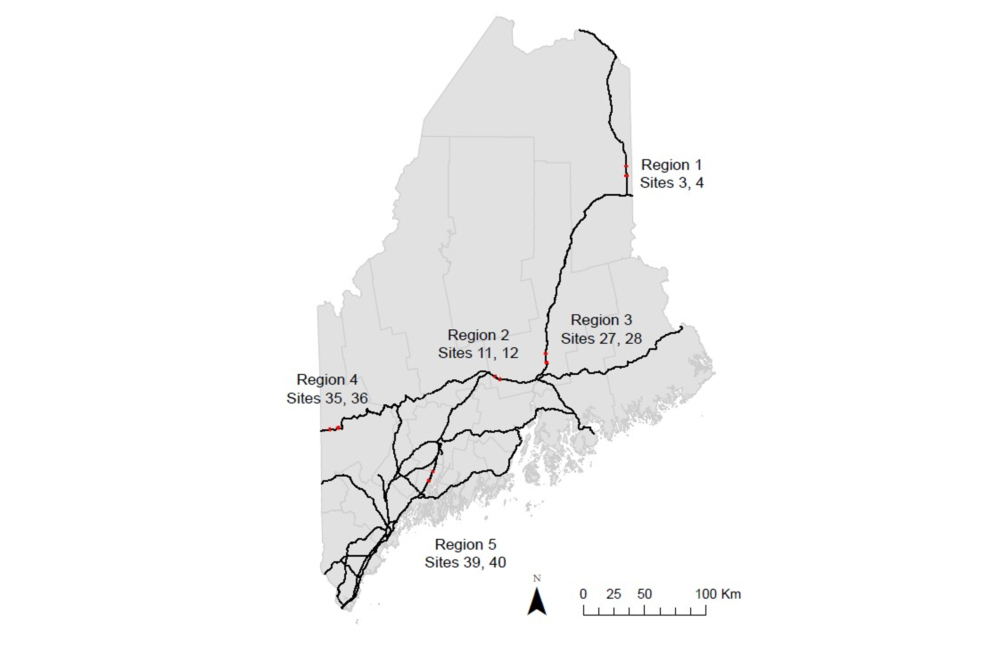
Map of roadside ROW sites sampled for bumble bees and butterflies.

1 km buffer displaying eight land cover types around a roadside ROW pollinator survey site.
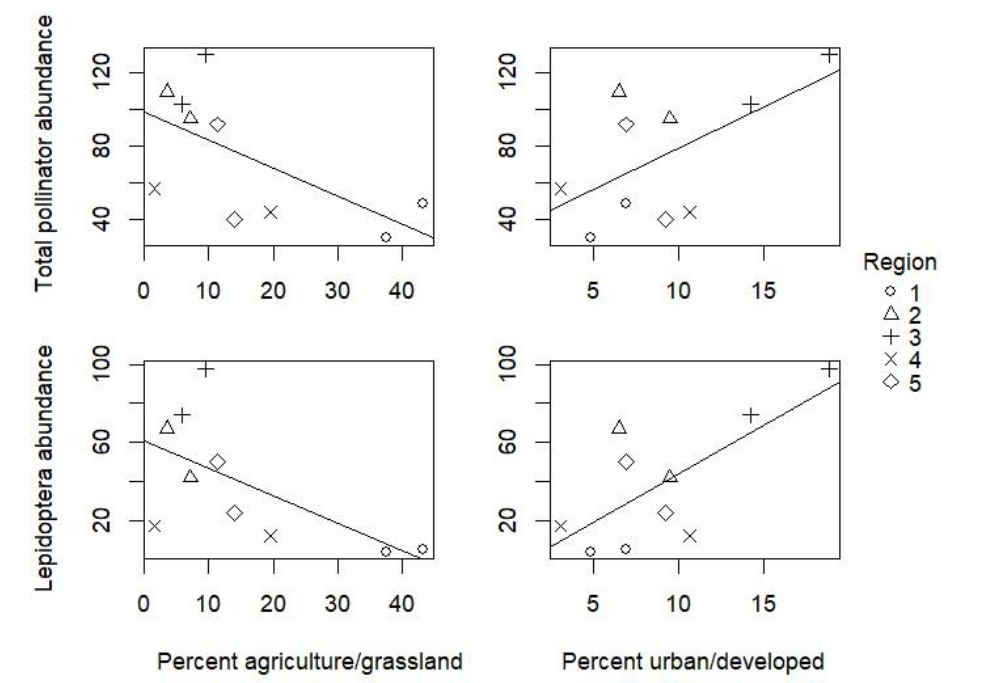
Percent of agriculture and developed land influenced pollinator communities.
The InVEST Crop Pollination Model predicts wild bee abundance across a landscape given information about land cover types, bee habitat, and bee life history traits. This model had been applied in Maine's Downeast lowbush blueberry growing region with low predictive power; I was tasked to improve model performance and apply the model to the other growing region in the state, the Midcoast. The previous model application was informed by expert opinion; I collected field data and created field-based parameters to inform the model. These improved model predictions in the Downeast growing region by correcting an overprediction of bee abundance in blueberry fields.
I then applied the field-based parameters to the Midcoast growing region; however, even with the improved parameters, model performance was poor around and within lowbush blueberry fields. Landscape pattern varies between these growing regions: Downeast blueberry fields are larger, Midcoast blueberry fields are smaller. Therefore, I calculated some landscape metrics of Midcoast blueberry fields to determine if pattern affects model performance.
I found that the perimeter area ratio of the blueberry field, the location of the validation point within the blueberry field, and the surrounding land cover type influenced model predictions. Bee abundance was overpredicted in fields with more complex shapes and when the validation point was located closer to the edge of the field than the center. Bee abundance was also overpredicted in fields surrounded by more forest edge and more non-blueberry agriculture.
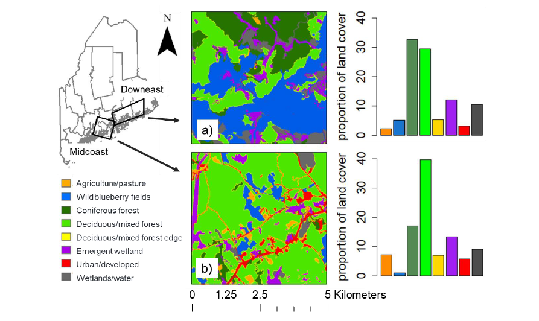
Comparison of Maine's two lowbush blueberry growing regions.
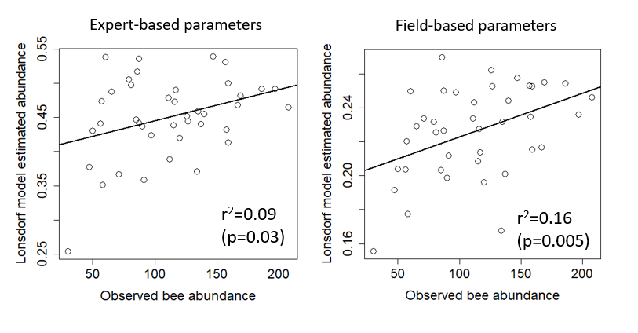
Change in model performance in the Downeast growing region with field-based parameters.
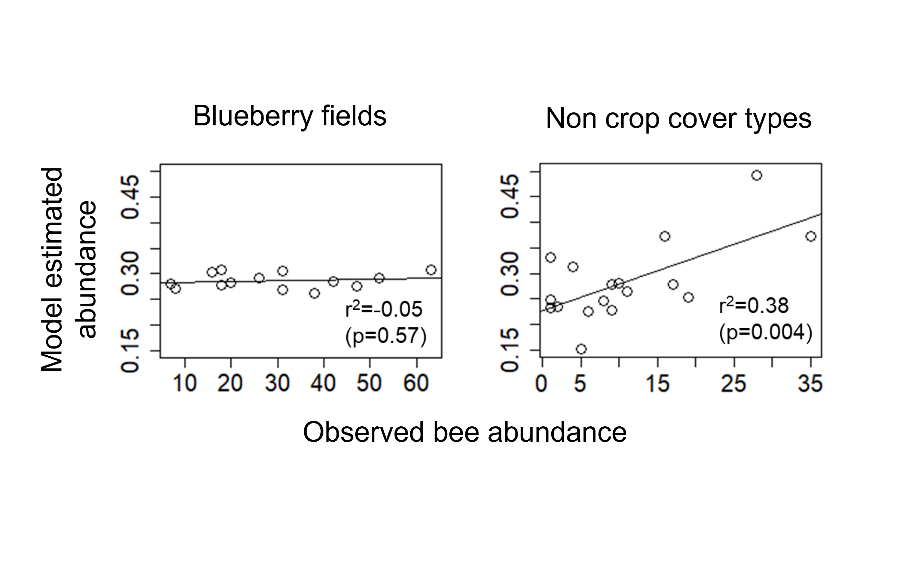
Model performance in the Midcoast growing region with field-based parameters within and not including lowbush blueberry fields.
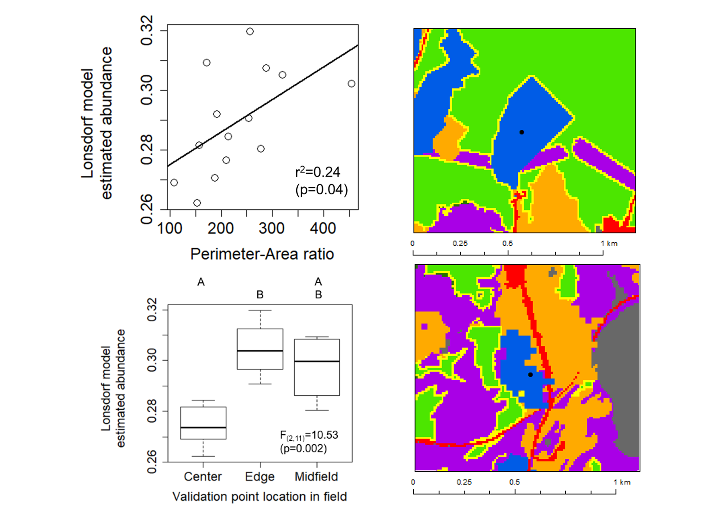
Assessing the influence of field shape and validation point location on model predictions.
I sampled wild bee communities at 56 sites across Maine's lowbush blueberry production landscape between 2014 and 2015. Bees are central place foragers, meaning they fly out to find food, then return to their nest. The distance they can fly is determined by their body size: larger bees fly longer distances, smaller bees fly shorter distances. Therefore, to characterize how landscape pattern influences bees, I began by creating buffers around each of my study sites representing foraging distances of different bee species.
I then extracted rasters around each study site at each buffer distance. I wish I had known how to code in ArcPy back then! While I didn't batch these buffers, I did batch process each buffer distance in Fragstats to measure pattern metrics, including the percent of each cover type, mean proximity index, perimeter-area ratio of landscape patches, and the interspersion-juxtaposition index (IJI).
I used the calculated metrics in linear models to assess any influence of landscape composition or configuration on the wild bees I collected at my study sites. Small-bodied bees were only affected by composition metrics, whereas large-bodied bees were affected by one configuration metric: IJI, which measures patch mixing. More patch mixing promoted abundance and species richness of large-bodied bees.
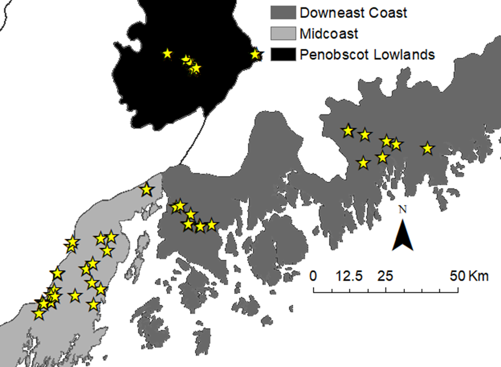
Locations of 56 study sites where wild bees were sampled.
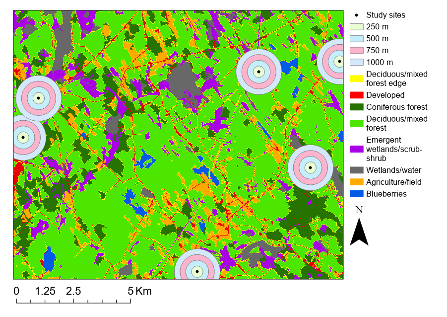
Example of buffers surrounding study sites and land cover types extracted for composition analysis.
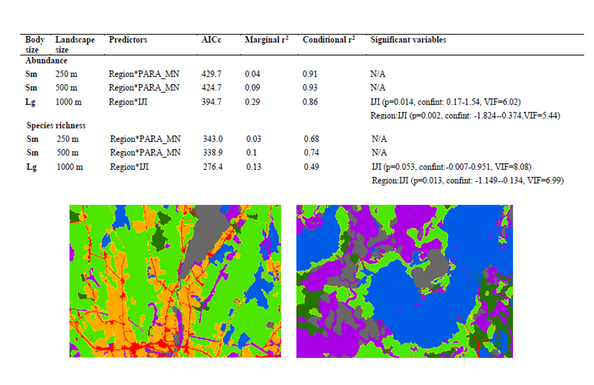
Results of landscape pattern analysis. Large bees benefit from more patches of different types within their landscape.
Maine has a 5 m statewide land cover map produced from SPOT imagery and published in 2004. My colleague classified this map into eight land cover classes relevant to pollinators of lowbush blueberry and conducted a detailed classification of one of the two blueberry growing regions of the state. I was tasked to do the same for the second growing region.
This involved unsupervised and supervised classifications of a 10 m pixel size 3600 sq km SPOT image acquired in September 2012 and ultimately hand-digitizing some omitted lowbush blueberry fields revealed through the SPOT classification.
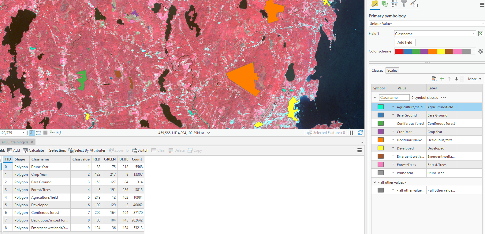
I made training classes for nine land cover types, including two for lowbush blueberry: prune year and crop year. Blueberry is harvested every other year, and the spectral classes are quite different if a field is fruiting or not.

The final classified map.
Using prexisting maps depicting forest harvest from 1991-2000 and 2000-2007, I quantified forest harvest patterns in three ecoregions of Maine. To account for variation within these ecoregions, I measured pattern at USDA NRCS Level 5 Watersheds. I measured a suite of landscape pattern metrics in Fragstats, then summarized patterns in R with Principal Components Analysis.
I found higher harvesting rates in the northeastern part of Maine, where forest ownership is primarily investment-based and the landscape is less developed and working forest-dominant. Harvest rates were lower in the south-central part of Maine, where forest ownership is more family-focused and the landscape is more populated. Harvest rates in the western Maine were between that of the northeastern and south-central ecoregions.
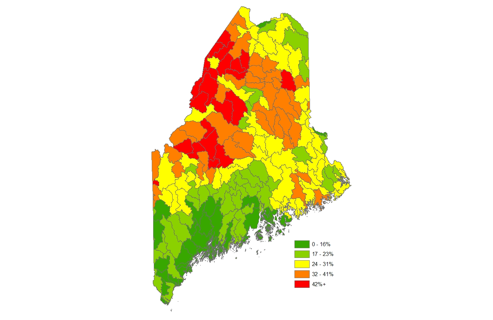
Percent forest harvested across Maine, 1991-2007, by USDA NRCS Level 5 Watersheds.
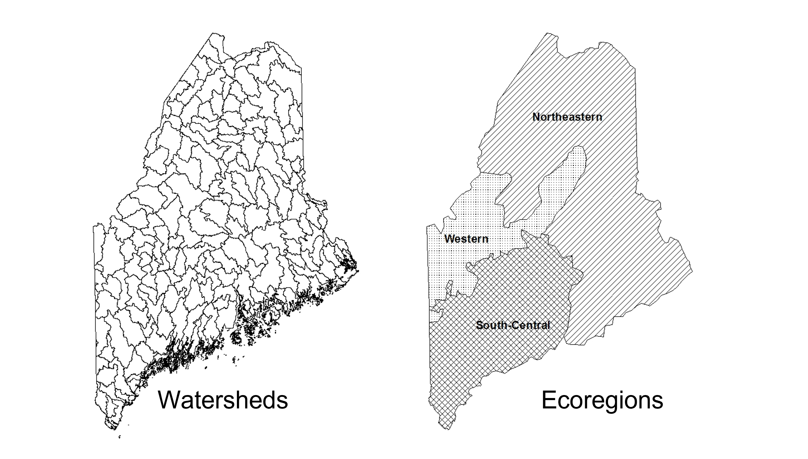
I sorted USDA NRCS Level 5 Watersheds into Maine DEP Ecoregions.
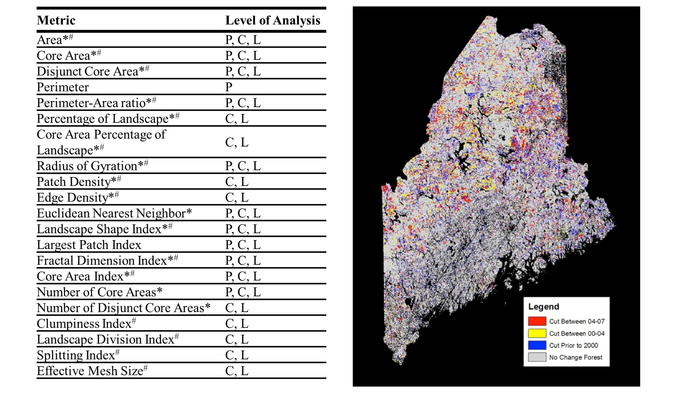
I calculated a suite of fragmentation metrics.
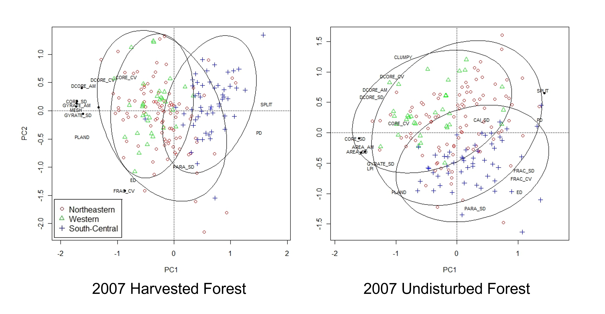
Principal Components Analysis revealed distinct harvest patterns over the 16 year study period.
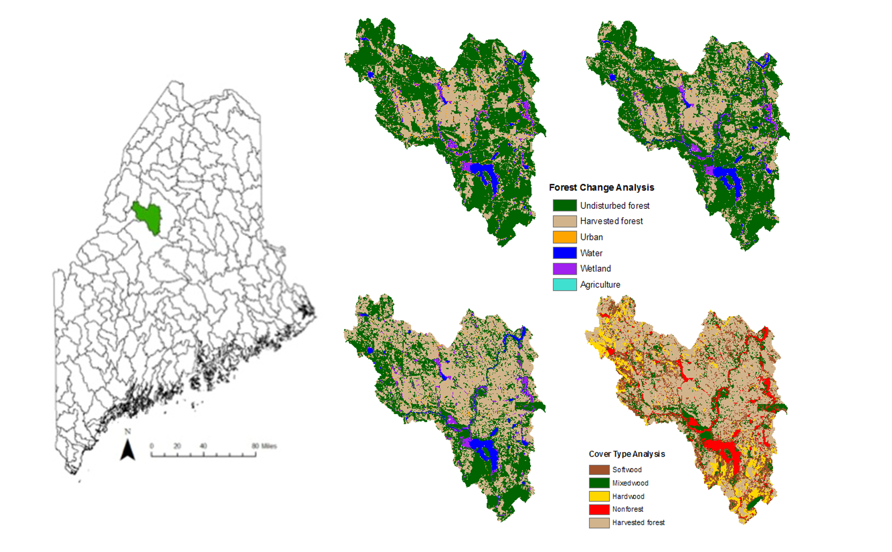
A typical watershed in the Northeastern ecoregion.
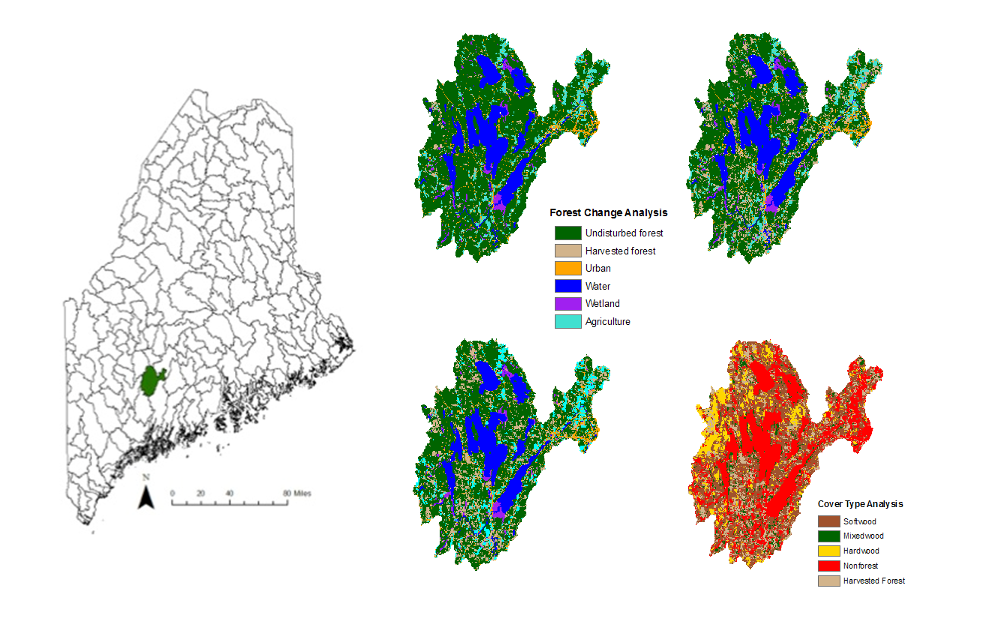
A typical watershed in the South-Central ecoregion.
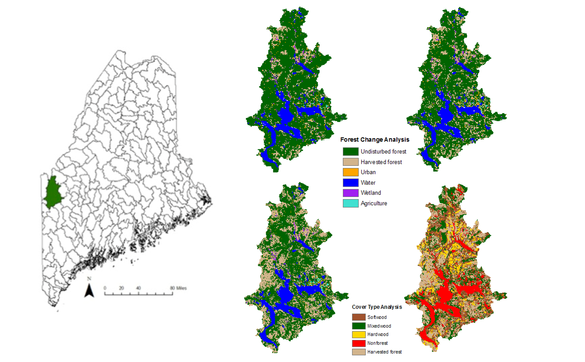
A typical watershed in the Western ecoregion.
Just for grins, my other MS thesis chapter involved taking a slew of spatial data sources and throwing them into a random forest model to try and predict visible tree crown diameter in forest that hadn't been harvested between 1972, when the first Landsat satellite launched, and 2007. One of the spatial data sources was NASA U2 aerial photography, which was collected in 1972. My lab had hard copies of this imagery in color infrared, and I was able to try old-school photogrammetry, interpreting these photos on a light table with an 8x lupe magnifier and a stereoscope with 3x magnification. It wasn't groundbreaking work, but it was cool to do!
I also created a mosaic of Landsat TM imagery to cover the state of Maine, which involved a lot of preprocessing: projecting, color correcting (radiometric normalization), cloud masking, mosaicking, and clipping. Maine is covered by eight Landsat scenes; I processed eight primary and four secondary scenes to create my final statewide mosaic. I calculated five spectral indices from this mosaic to use in my random forest model: Tasseled Cap wetness, Tasseled Cap greenness, Tasseled Cap brightness, NDMI, and NDVI.
Just 10.6% of my study area was unharvested after 35 years. Half of that was mixedwood forest, with the rest about evenly split between pure hardwood and pure softwood forest. The random forest model performed best with mixedwood forest.

NASA U2 color infrared imagery from 1972.
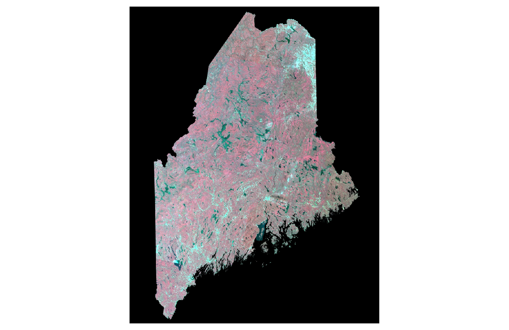
Landsat TM mosaic of Maine, 2007.
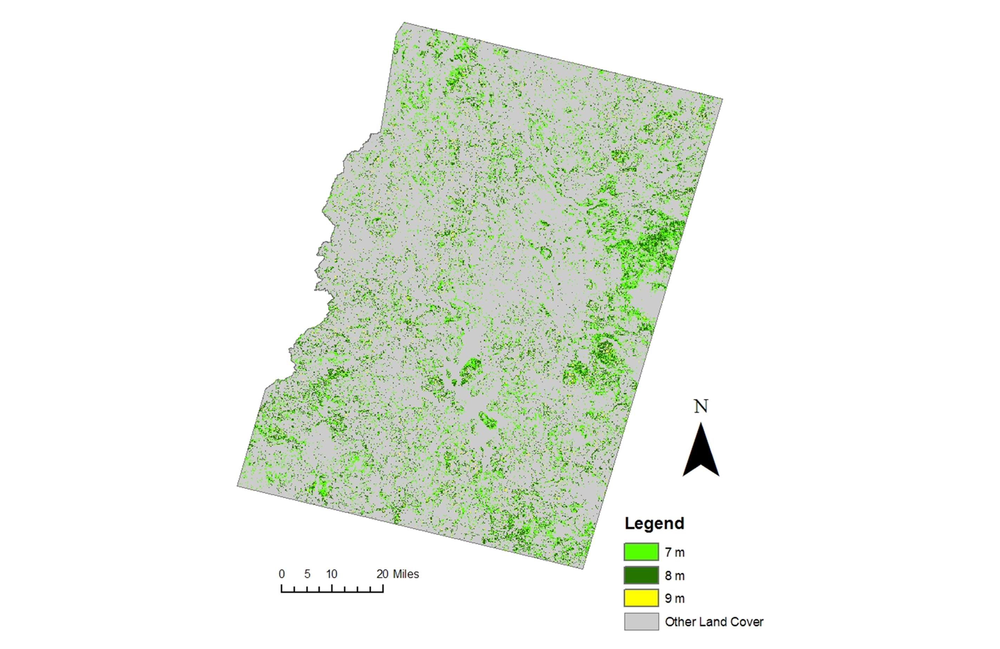
Mixedwood forest remaining after 35 years of harvest.
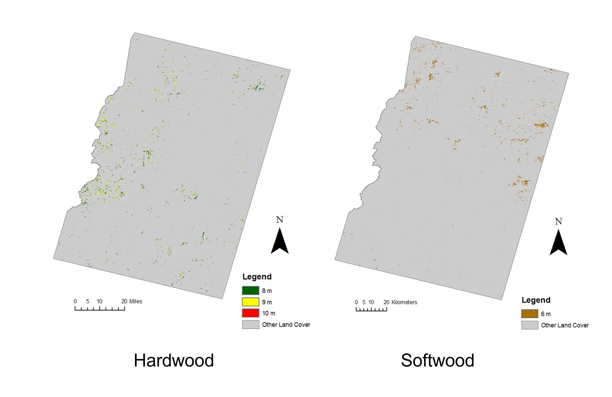
Hardwood and softwood forest remaining after 35 years of harvest.